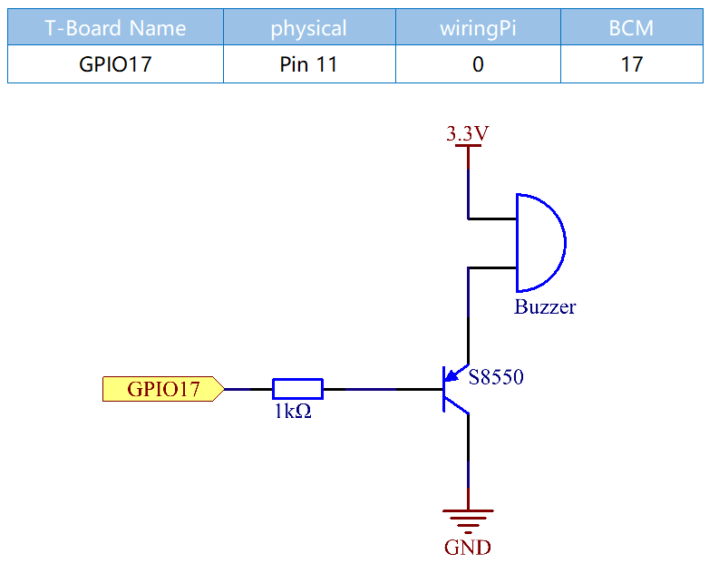
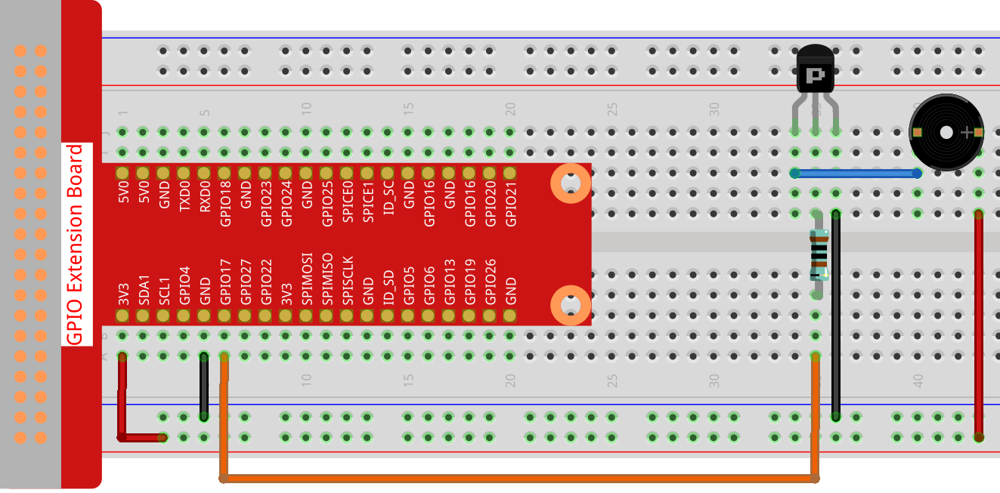

Nota
Ciao, benvenuto nella community SunFounder Raspberry Pi & Arduino & ESP32 Enthusiasts su Facebook! Approfondisci Raspberry Pi, Arduino ed ESP32 insieme ad altri appassionati.
Perché unirsi?
Supporto Esperti: Risolvi problematiche tecniche e post-vendita con l’aiuto della nostra community e del nostro team.
Impara e Condividi: Scambia suggerimenti e tutorial per migliorare le tue abilità.
Anteprime Esclusive: Ottieni l’accesso anticipato ai nuovi annunci di prodotto.
Sconti Speciali: Approfitta di sconti esclusivi sui nostri prodotti più recenti.
Promozioni e Concorsi: Partecipa a promozioni festive e a concorsi.
üëâ Sei pronto a esplorare e creare con noi? Clicca [Qui] e unisciti oggi stesso!
1.2.2 Buzzer Passivo
Introduzione
In questa lezione, impareremo come far suonare un buzzer passivo riproducendo musica.
Componenti

Schema Elettrico
In questo esperimento, vengono utilizzati un buzzer passivo, un transistor PNP e una resistenza da 1kΩ tra la base del transistor e il GPIO per proteggere il transistor.
Quando a GPIO17 vengono applicate frequenze diverse, il buzzer passivo emetterà suoni differenti; in questo modo, il buzzer riproduce la musica.
Procedure Sperimentali
Passo 1: Costruisci il circuito.
{kind=link}
Per Utenti del Linguaggio C
Passo 2: Cambia directory.
cd ~/davinci-kit-for-raspberry-pi/c/1.2.2/
Passo 3: Compila.
gcc 1.2.2_PassiveBuzzer.c -lwiringPi
Passo 4: Esegui.
sudo ./a.out
Eseguito il codice, il buzzer riproduce un pezzo musicale.
Nota
Se, dopo l’esecuzione, non funziona o compare un messaggio di errore come: "wiringPi.h: No such file or directory", fai riferimento a Il codice C non funziona?.
Codice
#include <wiringPi.h>
#include <softTone.h>
#include <stdio.h>
#define BuzPin 0
#define CL1 131
#define CL2 147
#define CL3 165
#define CL4 175
#define CL5 196
#define CL6 221
#define CL7 248
#define CM1 262
#define CM2 294
#define CM3 330
#define CM4 350
#define CM5 393
#define CM6 441
#define CM7 495
#define CH1 525
#define CH2 589
#define CH3 661
#define CH4 700
#define CH5 786
#define CH6 882
#define CH7 990
int song_1[] = {CM3,CM5,CM6,CM3,CM2,CM3,CM5,CM6,CH1,CM6,CM5,CM1,CM3,CM2,
CM2,CM3,CM5,CM2,CM3,CM3,CL6,CL6,CL6,CM1,CM2,CM3,CM2,CL7,
CL6,CM1,CL5};
int beat_1[] = {1,1,3,1,1,3,1,1,1,1,1,1,1,1,3,1,1,3,1,1,1,1,1,1,1,2,1,1,
1,1,1,1,1,1,3};
int song_2[] = {CM1,CM1,CM1,CL5,CM3,CM3,CM3,CM1,CM1,CM3,CM5,CM5,CM4,CM3,CM2,
CM2,CM3,CM4,CM4,CM3,CM2,CM3,CM1,CM1,CM3,CM2,CL5,CL7,CM2,CM1
};
int beat_2[] = {1,1,1,3,1,1,1,3,1,1,1,1,1,1,3,1,1,1,2,1,1,1,3,1,1,1,3,3,2,3};
int main(void)
{
int i, j;
if(wiringPiSetup() == -1){ //se l'inizializzazione di wiring fallisce, stampa il messaggio
printf("setup wiringPi failed !");
return 1;
}
if(softToneCreate(BuzPin) == -1){
printf("setup softTone failed !");
return 1;
}
while(1){
printf("music is being played...\n");
delay(100);
for(i=0;i<sizeof(song_1)/4;i++){
softToneWrite(BuzPin, song_1[i]);
delay(beat_1[i] * 500);
}
for(i=0;i<sizeof(song_2)/4;i++){
softToneWrite(BuzPin, song_2[i]);
delay(beat_2[i] * 500);
}
}
return 0;
}
Spiegazione del Codice
#define CL1 131
#define CL2 147
#define CL3 165
#define CL4 175
#define CL5 196
#define CL6 221
#define CL7 248
#define CM1 262
#define CM2 294
Le frequenze di ciascuna nota sono come mostrato. CL indica le note basse, CM le note medie e CH le note alte; 1-7 corrispondono rispettivamente alle note C, D, E, F, G, A, B.
int song_1[] = {CM3,CM5,CM6,CM3,CM2,CM3,CM5,CM6,CH1,CM6,CM5,CM1,CM3,CM2,
CM2,CM3,CM5,CM2,CM3,CM3,CL6,CL6,CL6,CM1,CM2,CM3,CM2,CL7,
CL6,CM1,CL5};
int beat_1[] = {1,1,3,1,1,3,1,1,1,1,1,1,1,1,3,1,1,3,1,1,1,1,1,1,1,2,1,1,
1,1,1,1,1,1,3};
L’array song_1[] memorizza una partitura musicale di una canzone, mentre beat_1[] indica il ritmo di ogni nota della canzone (0,5 s per ciascun battito).
if(softToneCreate(BuzPin) == -1){
printf("setup softTone failed !");
return 1;
Questo crea un pin di tono controllato tramite software. Puoi utilizzare qualsiasi pin GPIO, e la numerazione dei pin sarà quella della funzione wiringPiSetup() usata. Il valore di ritorno è 0 in caso di successo. Diversamente, è necessario verificare la variabile globale errno per capire l’errore.
for(i=0;i<sizeof(song_1)/4;i++){
softToneWrite(BuzPin, song_1[i]);
delay(beat_1[i] * 500);
}
Usa una dichiarazione for per riprodurre song_1.
Nella condizione di giudizio, i<sizeof(song_1)/4, la «divisione per 4» è necessaria perché l’array song_1[] è di tipo integer, e ogni elemento occupa quattro byte.
Il numero di elementi in song_1 (il numero di note musicali) è calcolato dividendo sizeof(song_4) per 4.
Per fare in modo che ogni nota suoni per beat * 500 ms, viene chiamata la funzione delay(beat_1[i] * 500).
Il prototipo di softToneWrite(BuzPin, song_1[i]) è:
void softToneWrite (int pin, int freq);
Questo aggiorna la frequenza del tono sul pin dato. Il tono non smette di suonare fino a quando la frequenza non viene impostata a 0.
Per Utenti del Linguaggio Python
Passo 2: Cambia directory.
cd ~/davinci-kit-for-raspberry-pi/python/
Passo 3: Esegui.
sudo python3 1.2.2_PassiveBuzzer.py
Eseguito il codice, il buzzer riproduce un pezzo musicale.
Codice
Nota
Puoi Modificare/Reimpostare/Copiare/Eseguire/Arrestare il codice qui sotto. Ma prima di procedere, è necessario accedere al percorso del codice sorgente come davinci-kit-for-raspberry-pi/python.
import RPi.GPIO as GPIO
import time
Buzzer = 11
CL = [0, 131, 147, 165, 175, 196, 211, 248] # Frequenze delle note basse in Do maggiore
CM = [0, 262, 294, 330, 350, 393, 441, 495] # Frequenze delle note medie in Do maggiore
CH = [0, 525, 589, 661, 700, 786, 882, 990] # Frequenze delle note alte in Do maggiore
song_1 = [ CM[3], CM[5], CM[6], CM[3], CM[2], CM[3], CM[5], CM[6], # Note della canzone 1
CH[1], CM[6], CM[5], CM[1], CM[3], CM[2], CM[2], CM[3],
CM[5], CM[2], CM[3], CM[3], CL[6], CL[6], CL[6], CM[1],
CM[2], CM[3], CM[2], CL[7], CL[6], CM[1], CL[5] ]
beat_1 = [ 1, 1, 3, 1, 1, 3, 1, 1, # Ritmi della canzone 1, 1 significa 1/8 di battito
1, 1, 1, 1, 1, 1, 3, 1,
1, 3, 1, 1, 1, 1, 1, 1,
1, 2, 1, 1, 1, 1, 1, 1,
1, 1, 3 ]
song_2 = [ CM[1], CM[1], CM[1], CL[5], CM[3], CM[3], CM[3], CM[1], # Note della canzone 2
CM[1], CM[3], CM[5], CM[5], CM[4], CM[3], CM[2], CM[2],
CM[3], CM[4], CM[4], CM[3], CM[2], CM[3], CM[1], CM[1],
CM[3], CM[2], CL[5], CL[7], CM[2], CM[1] ]
beat_2 = [ 1, 1, 2, 2, 1, 1, 2, 2, # Ritmi della canzone 2, 1 significa 1/8 di battito
1, 1, 2, 2, 1, 1, 3, 1,
1, 2, 2, 1, 1, 2, 2, 1,
1, 2, 2, 1, 1, 3 ]
def setup():
GPIO.setmode(GPIO.BOARD) # Numerazione dei GPIO in base alla posizione fisica
GPIO.setup(Buzzer, GPIO.OUT) # Imposta i pin come output
global Buzz # Assegna una variabile globale per sostituire GPIO.PWM
Buzz = GPIO.PWM(Buzzer, 440) # 440 è la frequenza iniziale.
Buzz.start(50) # Avvia il pin del Buzzer con un ciclo di lavoro al 50%
def loop():
while True:
print ('\n Playing song 1...')
for i in range(1, len(song_1)): # Riproduce la canzone 1
Buzz.ChangeFrequency(song_1[i]) # Cambia la frequenza in base alla nota della canzone
time.sleep(beat_1[i] * 0.5) # Ritarda una nota per beat * 0,5 s
time.sleep(1) # Attendi un secondo per la prossima canzone.
print ('\n\n Playing song 2...')
for i in range(1, len(song_2)): # Riproduce la canzone 2
Buzz.ChangeFrequency(song_2[i]) # Cambia la frequenza in base alla nota della canzone
time.sleep(beat_2[i] * 0.5) # Ritarda una nota per beat * 0,5 s
def destroy():
Buzz.stop() # Ferma il buzzer
GPIO.output(Buzzer, 1) # Imposta il pin del Buzzer su High
GPIO.cleanup() # Rilascia le risorse
if __name__ == '__main__': # Il programma inizia da qui
setup()
try:
loop()
except KeyboardInterrupt: # Quando viene premuto 'Ctrl+C', viene eseguita destroy().
destroy()
Spiegazione del Codice
CL = [0, 131, 147, 165, 175, 196, 211, 248] # Frequenza dei toni bassi in Do maggiore
CM = [0, 262, 294, 330, 350, 393, 441, 495] # Frequenza dei toni medi in Do maggiore
CH = [0, 525, 589, 661, 700, 786, 882, 990] # Frequenza dei toni alti in Do maggiore
Queste sono le frequenze di ciascuna nota. Il primo valore 0 è per saltare CL[0] affinché i numeri 1-7 corrispondano a CDEFGAB della scala.
song_1 = [ CM[3], CM[5], CM[6], CM[3], CM[2], CM[3], CM[5], CM[6],
CH[1], CM[6], CM[5], CM[1], CM[3], CM[2], CM[2], CM[3],
CM[5], CM[2], CM[3], CM[3], CL[6], CL[6], CL[6], CM[1],
CM[2], CM[3], CM[2], CL[7], CL[6], CM[1], CL[5] ]
Questi array rappresentano le note di una canzone.
beat_1 = [ 1, 1, 3, 1, 1, 3, 1, 1, 1, 1, 1, 1, 1, 1, 3, 1, 1, 3, 1, 1, 1, 1, 1, 1, 1, 2, 1, 1, 1, 1, 1, 1, 1, 1, 3 ]
Ogni numero nel ritmo (beat) rappresenta ⅛ di battito, cioè 0,5 s.
Buzz = GPIO.PWM(Buzzer, 440)
Buzz.start(50)
Definisci il pin Buzzer come pin PWM, imposta la sua frequenza a 440 e Buzz.start(50) serve per avviare il PWM. Inoltre, imposta il ciclo di lavoro al 50%.
for i in range(1, len(song_1)):
Buzz.ChangeFrequency(song_1[i])
time.sleep(beat_1[i] * 0.5)
Esegui un ciclo for, e il buzzer riprodurrà le note nell’array song_1[] con i tempi indicati nell’array beat_1[].
Ora puoi ascoltare il buzzer passivo che riproduce la musica.